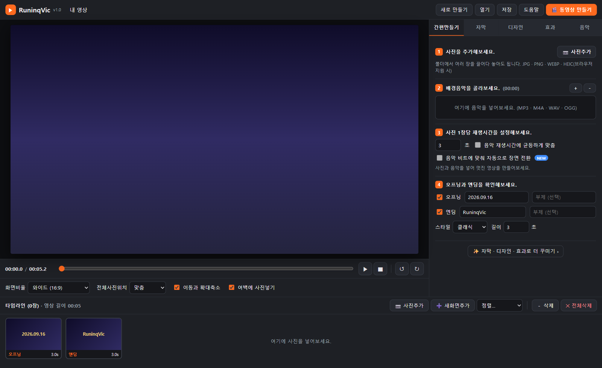
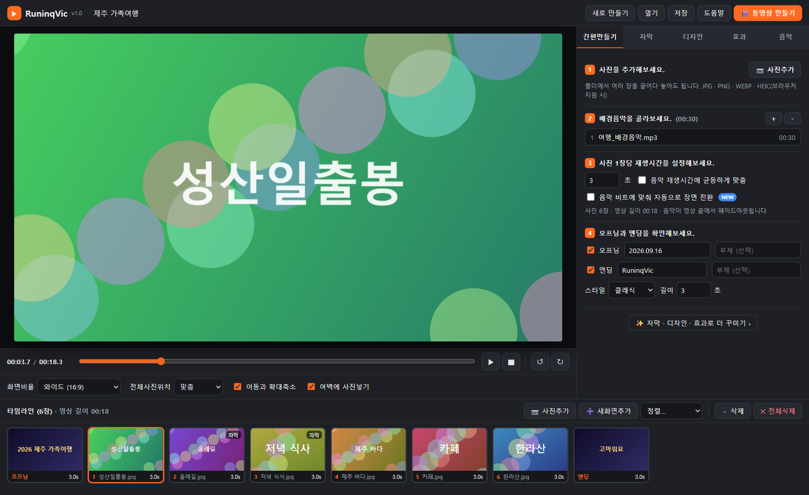
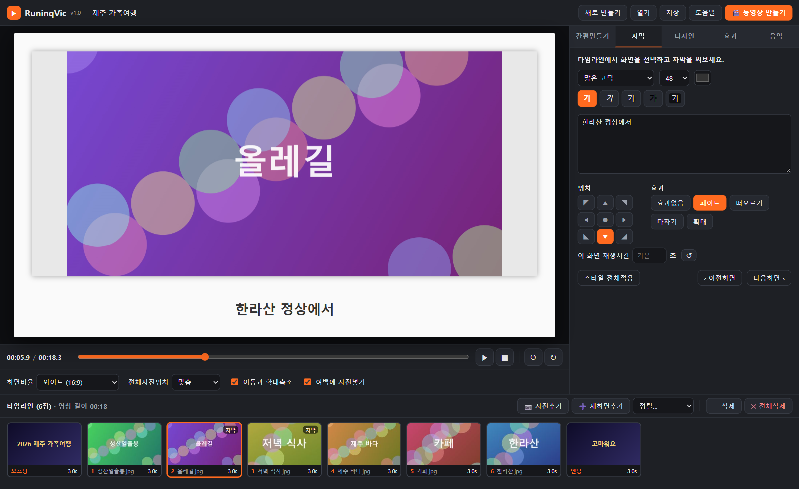
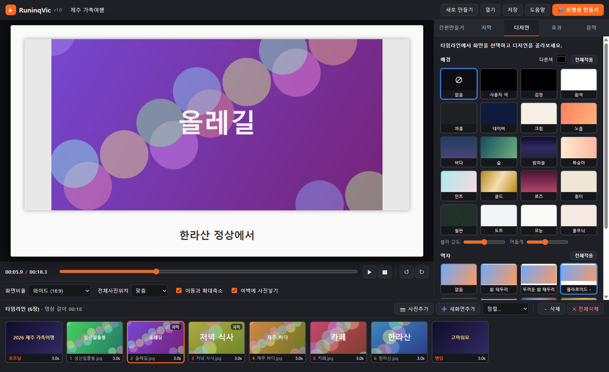
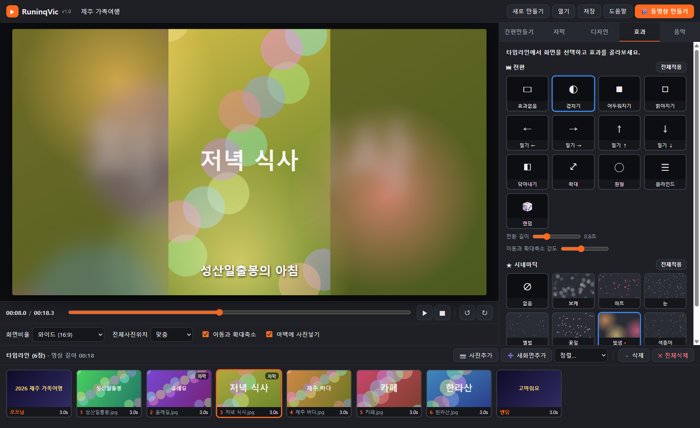
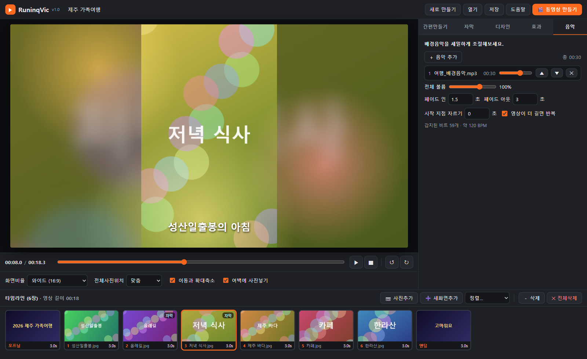
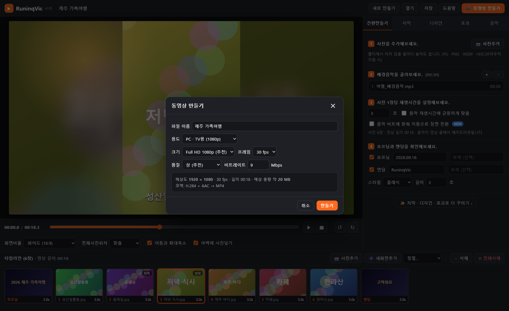

RuninqVic(러닝빅)은 사진 여러 장과 배경음악만 넣으면 사진마다 재생시간을 자동으로 배분해 한 편의 MP4 동영상으로 만들어 주는 프로그램입니다. 서비스가 종료된 알씨 동영상 만들기의 쉬운 사용법을 그대로 이어받았고, 요즘 필요한 기능(세로 영상, 4K, 음악 비트 맞춤, 자동 저장)을 더했습니다.
설치가 필요 없습니다. 웹 주소(https://runinqvic.vercel.app)에 접속하거나, 내려받은 폴더의 RuninqVic.bat을 더블클릭하면 바로 실행됩니다. 사진과 음악은 사용자의 PC 안에서만 처리되며 어디에도 전송되지 않습니다.
| 기능 | 알씨 동영상 만들기 | RuninqVic |
|---|---|---|
| 실행 | 설치 프로그램 | 설치 없이 브라우저(Edge/Chrome)에서 실행 |
| 사진 추가 | 버튼, 끌어다 놓기 | 버튼, 끌어다 놓기, 폴더째 끌어다 놓기, 이름·날짜순 정렬, 섞기 |
| 배경음악 | 1곡 | 여러 곡 순차 재생, 시작 지점 자르기, 페이드 인/아웃, 반복 |
| 재생시간 | 장당 N초, 음악에 균등 맞춤 | 장당 N초, 음악에 균등 맞춤, 음악 비트에 맞춰 자동 전환, 화면별 개별 설정 |
| 화면비율 | 16:9, 4:3 | 16:9, 4:3, 1:1, 9:16(쇼츠·릴스) |
| 자막 | 글꼴·크기·색·위치, 효과 3종 | 굵게·기울임·그림자·외곽선·배경상자 추가, 효과 5종, 스타일 전체 적용 |
| 디자인 | 배경·액자(다운로드 필요) | 배경 20종, 액자 10종 내장(다운로드 불필요), 사용자 색 |
| 효과 | 전환 다수, 시네마틱 8종 | 전환 12종 + 랜덤, 전환 길이 조절, 시네마틱 7종 |
| 저장 | MP4, 용도·크기·품질 | MP4(H.264/AAC) 720p~4K, 24/30/60fps, 품질 3단계 + 비트레이트 직접 입력, 진행률·남은 시간 |
| 프로젝트 | 없음 | 자동 저장(다시 열면 복원), .rvproj 파일 저장/열기 |
| 항목 | 요구 사항 |
|---|---|
| 운영체제 | Windows 10/11, macOS, ChromeOS (브라우저가 실행되는 환경) |
| 브라우저 | Microsoft Edge 또는 Google Chrome 최신 버전 (동영상 인코딩에 WebCodecs 기능을 사용합니다. Firefox·Safari는 지원하지 않습니다.) |
| 메모리 | 8GB 이상 권장. 4K로 저장하거나 사진이 100장을 넘으면 16GB를 권장합니다. |
| 인터넷 | 필요 없음. 웹 주소로 처음 접속할 때만 필요합니다. |
| 화면 | 가로 1,280픽셀 이상 권장 |
방법 1 · 웹으로 실행: 브라우저 주소창에 https://runinqvic.vercel.app 을 입력합니다. 즐겨찾기에 추가해 두면 편리합니다.
방법 2 · PC에서 실행: 프로그램 폴더(RuninqVic)의 RuninqVic.bat 파일을 더블클릭합니다. Edge(없으면 Chrome)가 주소창 없는 앱 창으로 열립니다. index.html 파일을 브라우저로 직접 열어도 됩니다.


| 영역 | 이름 | 하는 일 |
|---|---|---|
| ① | 상단 도구줄 | 프로젝트 이름, 새로 만들기 / 열기 / 저장 / 도움말, 동영상 만들기 버튼 |
| ② | 미리보기 | 현재 시점의 화면을 보여줍니다. 클릭하면 재생/일시정지됩니다. 실제 결과물과 똑같이 그려집니다. |
| ③ | 재생 컨트롤 | 현재 시간 / 전체 길이, 탐색 막대, 재생·정지, 선택한 사진 회전(↺ ↻) |
| ④ | 화면 설정 | 화면비율, 전체사진위치, 이동과 확대축소, 여백에 사진넣기 |
| ⑤ | 작업 패널 | 간편만들기 · 자막 · 디자인 · 효과 · 음악 탭 |
| ⑥ | 타임라인 | 오프닝 → 사진들 → 엔딩 순서. 끌어서 순서를 바꾸고, 클릭해서 선택합니다. |
가장 짧은 경로입니다. 이 순서만 따라 하면 영상이 완성됩니다.
작업 패널의 첫 번째 탭입니다. 1번부터 4번까지 순서대로 따라가면 됩니다.
| 설정 | 설명 |
|---|---|
| 초 입력 | 사진 한 장이 보이는 시간입니다. 기본 3초. 0.5~60초. 개별 화면은 자막 탭의 "이 화면 재생시간"으로 따로 정할 수 있습니다. |
| 음악 재생시간에 균등하게 맞춤 | 켜면 영상 전체 길이가 음악 길이와 같아지도록 모든 사진 시간을 같은 비율로 늘리거나 줄입니다. 사진 30장, 음악 3분이면 장당 약 6초가 됩니다. |
| 음악 비트에 맞춰 자동으로 장면 전환 | 켜면 사진이 바뀌는 순간이 음악의 박자에 맞춰집니다. 전체 길이는 음악 길이와 같아지고, 사진마다 시간이 조금씩 달라집니다. 박자가 뚜렷한 음악(팝, 댄스)에서 효과가 좋습니다. 잔잔한 음악은 비트가 적게 잡혀 결과가 "균등 맞춤"과 비슷할 수 있습니다. |
변경한 내용은 즉시 미리보기에 반영됩니다. 별도의 적용 버튼이 없습니다.
| 비율 | 용도 |
|---|---|
| 와이드 (16:9) | TV, PC, 유튜브. 가장 일반적입니다. |
| 기본 (4:3) | 옛날 사진, 빔프로젝터 |
| 정사각 (1:1) | 인스타그램 피드 |
| 세로 (9:16) | 유튜브 쇼츠, 인스타 릴스, 틱톡, 스마트폰 세로 재생 |
체크하면 사진이 보이는 동안 천천히 확대·축소되거나 이동합니다(켄 번즈 효과). 사진마다 방향이 자동으로 다르게 정해지며, 같은 프로젝트에서는 항상 같은 움직임이 나옵니다. 움직임의 세기는 효과 탭의 "이동과 확대축소 강도"로 조절합니다.
체크하면 "맞춤" 상태에서 생기는 여백을 그 사진을 흐리게 확대한 이미지로 채웁니다. 세로 사진을 가로 영상에 넣을 때 특히 자연스럽습니다. 끄면 여백이 단색(디자인 탭의 "다른색")으로 채워집니다. 흐림 정도와 어둡기는 디자인 탭에서 조절합니다.
타임라인에서 사진을 선택한 뒤 ↺(왼쪽 90°) 또는 ↻(오른쪽 90°)를 누릅니다. 회전한 사진은 타임라인 썸네일 왼쪽 위에 각도가 표시됩니다.
화면 아래쪽에 오프닝, 사진들, 엔딩이 순서대로 나열됩니다. 각 칸에는 순번, 파일 이름, 재생시간이 표시되고, 자막이 있으면 "자막" 표시가 붙습니다.
| 작업 | 방법 |
|---|---|
| 화면 선택 | 클릭. 선택한 화면은 주황색 테두리로 표시되고, 자막·디자인·효과 탭이 그 화면 기준으로 바뀝니다. ← → 키로 이전/다음 화면을 선택합니다. |
| 순서 바꾸기 | 사진을 끌어서 다른 사진 위에 놓습니다. 파란 표시가 나타난 위치로 이동합니다. |
| 정렬 | [정렬…] 메뉴: 이름순, 촬영·수정일순, 순서 뒤집기, 무작위 섞기 |
| 사진 추가 | [사진추가]. 선택한 화면이 있으면 그 뒤에 추가됩니다. |
| 새화면추가 | 사진 없이 글자만 있는 화면(예: 장 제목, 인사말)을 추가합니다. 자막 탭이 열리며 바로 내용을 입력할 수 있습니다. 배경은 디자인 탭에서 바꿉니다. |
| 삭제 | [－ 삭제] 또는 Delete 키. 선택한 화면 하나를 지웁니다. |
| 전체삭제 | 모든 사진을 지웁니다. 확인 창이 뜹니다. |

타임라인에서 화면을 먼저 선택한 뒤 입력합니다. 화면을 선택하지 않고 스타일을 바꾸면 이후 추가되는 사진의 기본 스타일이 됩니다.
| 항목 | 설명 |
|---|---|
| 글꼴 / 크기 / 색 | 맑은 고딕, 나눔고딕, 바탕, 궁서 등 PC에 설치된 글꼴을 씁니다. 크기 24~120. 색은 색상 상자를 눌러 고릅니다. |
| 가(굵게) 가(기울임) | 글자 모양 |
| 그림자 | 글자 뒤에 어두운 그림자를 넣어 밝은 사진 위에서도 잘 보이게 합니다. (기본 켜짐) |
| 외곽선 | 글자 테두리를 검게 두릅니다. 흰 배경(폴라로이드 액자 등)에 흰 글씨를 쓸 때 유용합니다. |
| 배경 상자 | 글자 뒤에 반투명 검은 띠를 깔아 줍니다. |
| 입력란 | 자막 내용. Enter로 줄을 바꿀 수 있습니다. 화면 너비를 넘으면 자동으로 줄바꿈됩니다. |
| 위치 | 9칸 중 하나를 고릅니다. 기본은 아래 가운데. |
| 효과 | 효과없음 / 페이드(서서히 나타남·사라짐) / 떠오르기(아래에서 올라오며 나타남) / 타자기(한 글자씩) / 확대(작게 시작해 커짐) |
| 이 화면 재생시간 | 이 화면만 다른 시간으로 보이게 합니다. 비우면 기본값. ↺로 되돌립니다. "음악 맞춤"이나 "비트 싱크"가 켜져 있으면 자동 계산되므로 입력할 수 없습니다. |
| 스타일 전체적용 | 현재 화면의 글꼴·크기·색·모양·위치·효과를 모든 화면에 적용합니다. 자막 내용은 복사되지 않습니다. |
| 이전화면 / 다음화면 | 타임라인 순서대로 이동하며 자막을 이어서 입력합니다. |

사진 뒤에 깔리는 배경입니다. "맞춤"으로 여백이 있을 때, 액자를 썼을 때, 텍스트 화면에서 보입니다. 사진이 화면을 꽉 채우면 보이지 않습니다.
| 종류 | 이름 |
|---|---|
| 없음 | "여백에 사진넣기"가 켜져 있으면 흐린 사진, 꺼져 있으면 "다른색"으로 채움 |
| 사용자 색 | "다른색" 색상 상자에서 고른 단색 |
| 단색 | 검정, 흰색, 차콜, 네이비, 크림 |
| 그라데이션 | 노을, 바다, 숲, 밤하늘, 복숭아, 민트, 골드, 로즈 |
| 질감·패턴 | 종이, 칠판, 도트, 모눈, 줄무늬 |
| 액자 | 느낌 |
|---|---|
| 없음 | 액자 없음 |
| 흰 테두리 / 두꺼운 흰 테두리 | 깔끔한 흰 여백 |
| 폴라로이드 | 아래가 넓은 즉석사진. 자막을 아래 가운데에 어두운 색으로 넣으면 손글씨 느낌이 납니다. |
| 필름 | 위아래 검은 필름 구멍 |
| 둥근 모서리 | 모서리를 둥글게, 그림자 |
| 비네트 | 가장자리를 어둡게 |
| 금색 액자 | 고급스러운 금색 프레임 |
| 테이프 | 네 귀퉁이를 테이프로 붙인 스크랩북 느낌 |
| 어두운 테두리 | 얇은 밝은 선이 있는 검은 여백 |
| 그림자 카드 | 떠 있는 카드처럼 그림자 |
타일을 클릭하면 선택한 화면에만 적용됩니다. 화면별로 다르게 설정된 항목은 타일 이름 옆에 주황 점(•)이 붙습니다. [전체적용]을 누르면 현재 선택된 값을 모든 화면의 기본값으로 만들고 화면별 설정을 지웁니다. 화면을 선택하지 않은 상태에서 클릭하면 기본값이 바뀝니다.

이전 화면에서 이 화면으로 넘어올 때의 효과입니다. 첫 화면(오프닝)에는 적용되지 않습니다.
| 전환 | 설명 |
|---|---|
| 효과없음 | 바로 바뀜 |
| 겹치기 | 두 화면이 서서히 겹치며 바뀜 (기본) |
| 어두워지기 / 밝아지기 | 검정(흰색)으로 갔다가 다음 화면이 나타남 |
| 밀기 ← → ↑ ↓ | 다음 화면이 밀고 들어옴 |
| 닦아내기 | 왼쪽부터 닦아내듯 바뀜 |
| 확대 | 이전 화면은 커지며 사라지고 다음 화면은 커지며 나타남 |
| 원형 | 가운데 원이 커지며 다음 화면이 드러남 |
| 블라인드 | 가로 블라인드가 열리듯 바뀜 |
| 랜덤 | 화면마다 다른 전환을 자동으로 고릅니다 (항상 같은 결과) |
사진 위에 움직이는 장식을 겹칩니다. 보케(빛망울), 하트, 눈, 별빛, 꽃잎, 빛샘, 색종이 7가지. 화면별 또는 전체에 적용할 수 있고 오프닝·엔딩에는 전체 설정이 적용됩니다.

| 항목 | 설명 |
|---|---|
| 목록 | 곡별 볼륨 슬라이더, ▲▼로 순서 변경, ✕로 제거 |
| 전체 볼륨 | 0~150%. 원곡이 작으면 100%보다 키울 수 있습니다. |
| 페이드 인 / 페이드 아웃 | 시작할 때 커지는 시간, 영상 끝에서 작아지는 시간(초) |
| 시작 지점 자르기 | 음악 앞부분을 건너뜁니다. 예: 15를 넣으면 15초 지점부터 시작 |
| 영상이 더 길면 반복 | 켜면 음악이 끝나도 처음부터 다시 재생. 끄면 음악이 끝난 뒤는 무음 |
| 비트 정보 | 감지된 비트 수와 대략의 BPM(분당 박자 수) |

| 항목 | 설명 |
|---|---|
| 파일 이름 | 저장할 파일 이름. 확장자(.mp4)는 자동으로 붙습니다. |
| 용도 | PC·TV용(1080p) / 유튜브(1080p 고화질) / 스마트폰·SNS(720p) / 4K UHD / 사용자 설정. 고르면 아래 값이 자동으로 채워집니다. |
| 크기 | HD 720p, Full HD 1080p(추천), QHD 1440p, 4K 2160p. 화면비율에 맞는 가로세로 픽셀이 안내문에 표시됩니다. |
| 프레임 | 24 / 30 / 60 fps. 사진 슬라이드쇼는 30이면 충분하며, 60은 전환과 움직임이 더 부드럽지만 파일이 커집니다. |
| 품질 | 하(작은 용량) / 중 / 상(추천). 비트레이트를 자동으로 정합니다. |
| 비트레이트 | 직접 입력(Mbps). 유튜브 1080p 권장값은 8~12, 4K는 35~45입니다. |
| 안내문 | 해상도, 길이, 예상 파일 용량, 사용될 코덱이 표시됩니다. |
| 기능 | 설명 |
|---|---|
| 자동 저장 | 모든 변경은 1초 안에 브라우저 안(IndexedDB)에 저장됩니다. 창을 닫고 다시 열면 "이전 작업을 복원했습니다"라는 안내와 함께 이어집니다. 브라우저 데이터를 삭제하면 함께 지워지니 중요한 작업은 파일로 저장하세요. |
| 저장 (Ctrl+S) | 사진·음악·설정을 모두 담은 .rvproj 파일 하나로 저장합니다. 다른 PC나 USB로 옮길 수 있습니다. 사진 원본이 들어가므로 용량이 큽니다. |
| 열기 (Ctrl+O) | .rvproj 파일을 엽니다. 현재 작업은 대체됩니다. 파일을 화면에 끌어다 놓아도 열립니다. |
| 새로 만들기 (Ctrl+N) | 현재 작업을 지우고 빈 프로젝트로 시작합니다. |
| 프로젝트 이름 | 상단의 이름을 클릭해 바꿉니다. 저장 파일과 동영상 파일의 기본 이름이 됩니다. |
| 키 | 동작 | 키 | 동작 |
|---|---|---|---|
| Space | 재생 / 일시정지 | ← → | 이전 / 다음 화면 선택 |
| Home / End | 처음 / 끝으로 | Delete | 선택한 화면 삭제 |
| Ctrl+E | 동영상 만들기 | Ctrl+S | 프로젝트 저장 |
| Ctrl+O | 프로젝트 열기 | Ctrl+N | 새로 만들기 |
| F1 | 도움말 | Esc | 창 닫기 |
지원하지 않는 형식(HEIC 등)일 수 있습니다. 스마트폰 설정에서 "호환성 높은 형식(JPEG)"으로 바꾸거나, 사진 앱에서 JPG로 내보낸 뒤 추가하세요. 실패한 장수는 화면 아래 알림에 표시됩니다.
DRM이 걸린 음원(스트리밍 앱에서 내려받은 파일)은 열 수 없습니다. MP3·M4A·WAV 파일을 사용하세요.
브라우저는 사용자가 클릭하기 전까지 소리를 내지 않습니다. 재생 버튼을 한 번 누르면 해결됩니다. PC 볼륨과 음악 탭의 볼륨도 확인하세요.
이 브라우저에서 동영상 인코더를 쓸 수 없는 경우입니다. 최신 Edge 또는 Chrome에서 열어 주세요. 안내문에 이유가 표시됩니다.
해상도를 1080p로, 프레임을 30으로 낮추세요. 창을 최소화하지 말고 그대로 두세요. 사진이 매우 많으면 시간이 비례해 늘어납니다.
파일 이름이 .webm이면 H.264 대체 형식입니다. VLC, Chrome, 유튜브에서는 재생되며, Windows 미디어 플레이어에서 안 되면 Edge에서 열어 보세요.
"여백에 사진넣기"를 켜면 흐린 사진으로 채워집니다. 또는 화면비율을 세로(9:16)로 바꾸거나, 전체사진위치를 "채움"으로 바꾸세요(사진 위아래가 잘립니다).
자막 색을 어두운 색으로 바꾸거나 "외곽선"을 켜세요.
간편만들기 3번의 "음악 재생시간에 균등하게 맞춤"을 켜세요. 오프닝·엔딩 시간도 전체 길이에 포함됩니다.
박자가 약한 음악은 비트가 적게 잡힙니다. 균등 맞춤을 쓰거나, 음악 탭의 "시작 지점 자르기"로 조용한 도입부를 건너뛰세요.
브라우저의 사이트 데이터를 삭제했거나 다른 브라우저(또는 시크릿 창)로 열면 복원되지 않습니다. 같은 브라우저로 열고, 중요한 작업은 [저장]으로 .rvproj 파일을 만들어 두세요.
[저장]으로 .rvproj 파일을 만들어 옮긴 뒤 [열기]로 여세요.
| 구분 | 형식 |
|---|---|
| 사진 | JPG/JPEG, PNG, WEBP, GIF, BMP, AVIF (HEIC/HEIF는 브라우저 지원 시) |
| 음악 | MP3, M4A, AAC, WAV, OGG, FLAC |
| 프로젝트 | .rvproj (RuninqVic 프로젝트, JSON 형식) |
| 결과 동영상 | MP4 (H.264 + AAC). 대체: WebM (VP9 + Opus) |
| 알씨 동영상 만들기 | RuninqVic |
|---|---|
| 간편만들기 / 상세꾸미기 | 간편만들기 탭 / 자막·디자인·효과·음악 탭 |
| 적용 (오프닝·엔딩) | 입력 즉시 반영 (버튼 없음) |
| 전체사진위치 채움 / 맞춤 | 전체사진위치 채움 / 맞춤 / 원본 크기 |
| 여백에 사진넣기 | 여백에 사진넣기 (블러 강도·어둡기 조절 추가) |
| 배경·액자 다운로드 | 모두 내장 (다운로드 불필요) |
| 만들기 → 용도·크기·품질 | 동영상 만들기 → 용도·크기·프레임·품질·비트레이트 |